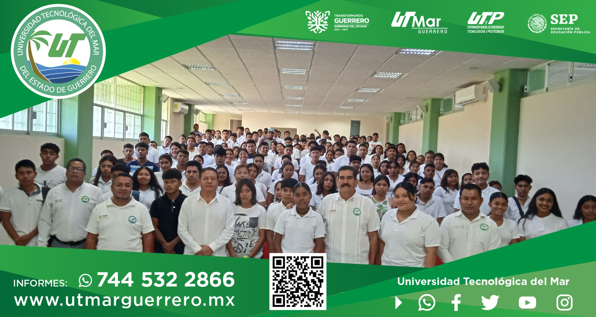

Acerca del Boletín Universitario
Este boletín tiene como objetivo principal través de contenido diverso y relevante, se busca fortalecer la conexión entre informar, comunicar y promover la participación en la comunidad universitaria. A académicos, eventos, noticias y opiniones. El boletín se publicará trimestralmente estudiantes, profesores, personal administrativo y alumnos, destacando logros de la comunidad universitaria, adaptándose a las tendencias tecnológicas y en formato digital y se distribuirá de manera eficaz para llegar a todos los miembros comunicación, promover la transparencia y fortalecer la identidad institucional de la garantizando la sostenibilidad a largo plazo. Este proyecto busca mejorar la universidad.
Proin et arcu ligula. Praesent quis erat eu est solliditudin tristique ut in arcu. Donec bibendum ex id ligula semper dictum. Proin malesuada luctus auctor. Suspendisse ullamcorper, mi vel molestie ornare, arcu magna euismod ipsum, in malesuada nulla magna ut enim. Morbi lacinia magna sed sapien auctor, vitae luctus nunc cursus.
Fondo
Diseñar la apariencia visual del boletín, incluyendo el formato, colores, logotipos y tipografía. Asegurarse de que sea atractivo y fácil de leer. Elegir un diseño limpio y atractivo que refleje la identidad de la universidad
Trabajo en equipo
Formar un equipo responsable del boletín, que incluya redactores, diseñadores gráficos, y editores. Asignar roles y responsabilidades claras.
valores
Identificar los objetivos específicos del boletín y a quién se dirigirá. Por ejemplo, podría ser para estudiantes, profesores, personal administrativo, exalumnos, o una combinación de estos grupos.

Julio Cesar Garcia Gil
Supervisor
Alumno de la Universidad Tecnologica del Mar de la carrera Entornos Virtuale y Negocios Digitales encargado de supervisar toda la informacion que es subida en esta pagína.

Elver Yan Chavez Catalan
Director de Diseño
Alumno de la Universidad Tecnologica del Mar de la carrera Entornos Virtuale y Negocios Digitales encargado de de todo el diseño de esta pagina el logotipo paleta de colores, para no perder la identidad de la Universidad.

Alfredo Estrada Leal
Desarrollador de software
Alumno de la Universidad Tecnologica del Mar de la carrera Entornos Virtuale y Negocios Digitales encargado de la ejecucion de esta pagína para todas las funcionalidades como son el Backend y el frontend.

Luis Manuel
Desarrollador de realidad aumentada
Alumno de la Universidad Tecnologica del Mar de la carrera Entornos Virtuale y Negocios Digitales encargado de las animaciones de las imagen en 3D y su formacion de diseño.
Luis Yael Salmeron Arrellanes
Editor
Alumno de la Universidad Tecnologica del Mar de la carrera Entornos Virtuale y Negocios Digitales encargado de toda la documentacion de la pagina, solicitudes, gasto en la pagina y conograma.